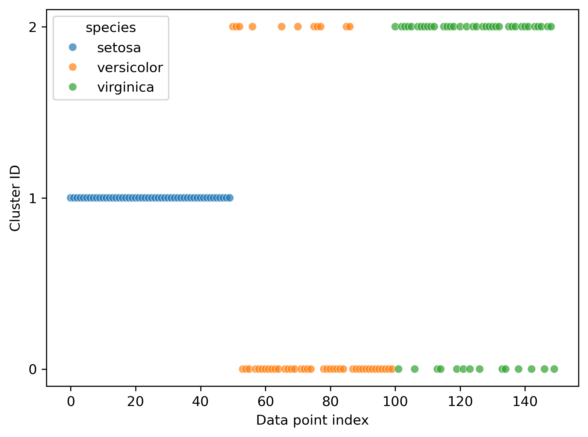
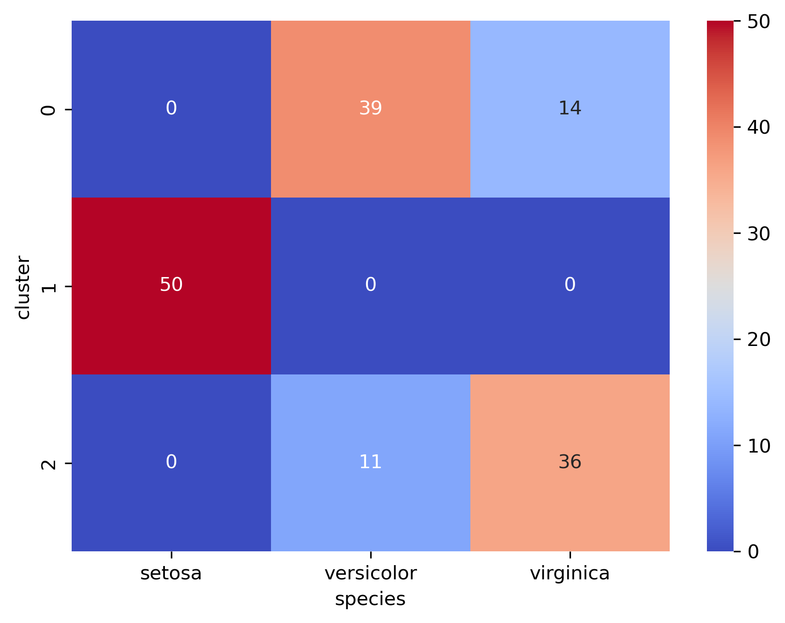
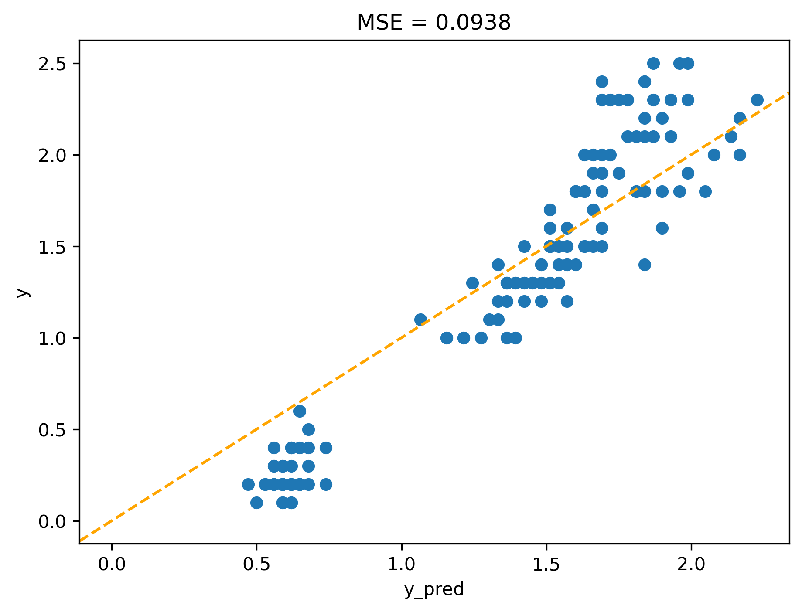
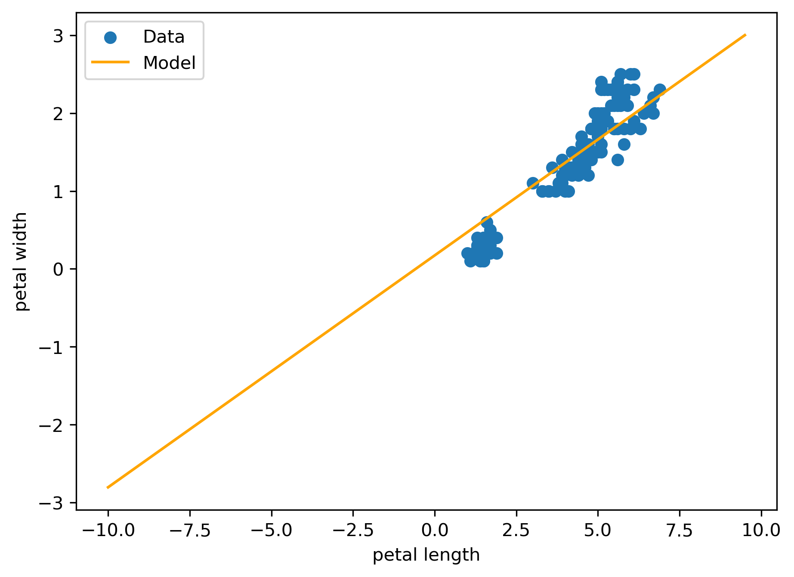
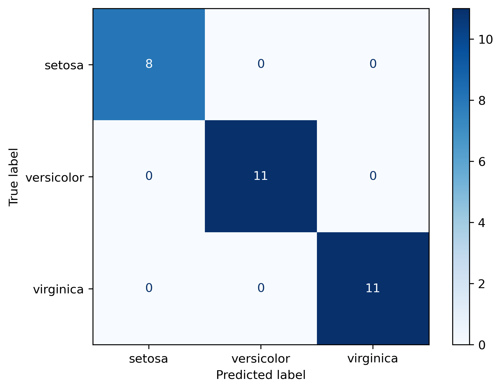

Iris Models
Unsupervised and Supervised Analysis
Import Packages
Obtain Iris data set
Normalization
Code
| SL | SW | PL | PW | species | |
|---|---|---|---|---|---|
| 0 | -0.900681 | 1.019004 | -1.340227 | -1.315444 | setosa |
| 1 | -1.143017 | -0.131979 | -1.340227 | -1.315444 | setosa |
| 2 | -1.385353 | 0.328414 | -1.397064 | -1.315444 | setosa |
| 3 | -1.506521 | 0.098217 | -1.283389 | -1.315444 | setosa |
| 4 | -1.021849 | 1.249201 | -1.340227 | -1.315444 | setosa |
Unsupervised Analysis
Principle Component Analysis
…. provides very convenient low-dimensional representation of the data
Code
from sklearn.decomposition import PCA
pca = PCA(n_components=2)
Z_pca = pca.fit_transform(Z)
var_exp = pca.explained_variance_ratio_
xlab = f"PC1 ({var_exp[0]:.3f})"
ylab = f"PC2 ({var_exp[1]:.3f})"
sns.scatterplot(x=Z_pca[:,0], y=Z_pca[:,1])
#sns.scatterplot(x=Z_pca[:,0], y=Z_pca[:,1], hue=df["species"])
plt.title("PCA plot")
plt.xlabel(xlab)
plt.ylabel(ylab)
plt.tight_layout()
plt.show()
Cluster Analysis (kmeans)
… represent 4D data points by simple cluster-ID
Code
from sklearn.cluster import KMeans
kmeans = KMeans(n_clusters=3, random_state=42, n_init=5)
df["cluster"] = kmeans.fit_predict(Z)
sns.scatterplot(
data=df,
x=df.index,
y="cluster",
hue="species",
alpha=0.7
)
plt.yticks(sorted(df["cluster"].unique()))
plt.xlabel("Data point index")
plt.ylabel("Cluster ID")
plt.show()
Code

Note
- each data point is mapped onto a cluster-ID
- need to specify number of clusters, initializations
- iterative solutions
- requires sample distances and feature normalization
- no “target” information (\(y\) is not used) \(\to\) unsupervised
- clusterID != species label
- many more cluster algorithms
Supervised Model: \(x \to y\)
Process Data
First we need to define input data (x) and output/target data (y).
Usually necessary: reformating and reshaping (numpy \(\to\) tensor)
Code
import numpy as np
import torch
print('torch version:', torch.__version__)
# select two arbitrary Iris variables: x=X[:,2] and y=X[:,3]
x = torch.as_tensor(X[:,2], dtype=torch.float32)
y = torch.as_tensor(X[:,3], dtype=torch.float32)
# add dimension if missing: shape (n,) --> (n,1)
if x.ndim == 1:
x = x.unsqueeze(1)
if y.ndim == 1:
y = y.unsqueeze(1)
print(f"x.shape: {x.shape}")
print(f"y.shape: {y.shape}")torch version: 2.7.1
x.shape: torch.Size([150, 1])
y.shape: torch.Size([150, 1])Define Model
Use PyTorch to define
- a simple linear model (with one input and one output),
- a suitable loss function, and
- an optimizer.
Train the Model
Chose a number of iterations (e.g 100 “epochs”) and keep track of the loss at each iteration.
Code
losses = []
model.train()
for epoch in range(2000):
y_pred = model(x)
loss = loss_func(y_pred, y)
optimizer.zero_grad()
loss.backward()
optimizer.step()
losses.append(loss.item()) # keep track of losses
# finished training. inspect model
print('Mean Squared Error (loss): ',loss.item())
print('Parameters:')
for name, p in model.named_parameters():
print(name, p.detach())Mean Squared Error (loss): 0.0937623456120491
Parameters:
weight tensor([[0.2976]])
bias tensor([0.1728])
Note
- “weight” = slope parameter
- “bias” = intercept
Evaluate Training: loss history
Plot the losses against the number of iterations: reduction & plateau?
Evaluate Model
Compare model output \(y_{pred}\) to known output \(y\).
Code

Model Critique
- there is no perfect fit because
- learning has not yet converged
- real data is noisy MSE \(\ne 0\)
- Model Evaluation is too optimistic: why?
Make Predicitons
Use the trained model to predict output \(y_{pred}\) for new \(x\)-values.
Code
# pick some range of new x-values (meaningful?)
x_new = torch.arange(-10, 10, 0.5).unsqueeze(1) # view(-1, 1)
model.eval()
with torch.no_grad():
y_pred = model(x_new)
# y_pred = y_pred.detach() # alternative: detach y_pred from computational graph
plt.scatter(x, y, label="Data")
plt.plot(x_new, y_pred, c="orange", label="Model")
plt.xlabel('petal length')
plt.ylabel('petal width')
plt.legend()
plt.show()
More Critique
- Models are ignorant: What is the Petal.Width for Petal.Length = -5cm ?
- Models are not necessarily causal
- “All models are wrong, some are useful.”
Task: Improving the model
- Go back to the data definition an replace \(x\) (predictor = Petal Length) with the first 3 variables of the iris data. Goal: predict \(y\) ( = target = Petal Width = 4th variable)
- Adjust the linear model to make it a “multivariate” linear model
- Train the model for a suitable number of iterations - and plot the loss history
- Take note of the final loss (MSE). Compare it between the simple and multivariate linear model. Has it improved (reduced)?
Multivariate Multinomial Regression
… with test-train split
Code
import numpy as np
import torch
import torch.nn as nn
from sklearn.metrics import accuracy_score, confusion_matrix, ConfusionMatrixDisplay
X = torch.tensor(iris.data, dtype=torch.float32) # numeric measurements
Y = torch.tensor(iris.target, dtype=torch.long) # class labels
print(f"X.shape = {X.shape}, Y.shape = {Y.shape}")
# define train and test data sets
n_samples = X.shape[0] # number of all samples
n_train = int(0.8 * n_samples) # number of training samples
perm = torch.randperm(n_samples) # shuffled random indicies
i_train = perm[:n_train] # train indices
i_test = perm[n_train:] # test indices
model = nn.Linear(4, 3) # n_in = 4, n_out = 3
loss_func = nn.CrossEntropyLoss()
optimizer = torch.optim.SGD(model.parameters())
model.train()
for epoch in range(5000):
yp = model(X[i_train])
loss = loss_func(yp, Y[i_train])
optimizer.zero_grad()
loss.backward()
optimizer.step()
model.eval()
z = model(X[i_test])
y_pred_class = torch.argmax(z, dim=1)
y_true_class = Y[i_test].numpy()
acc = accuracy_score(y_true_class, y_pred_class)
print('Accuracy: ', acc)
cm = confusion_matrix(y_true_class, y_pred_class)
disp = ConfusionMatrixDisplay(confusion_matrix=cm,
display_labels=iris.target_names)
disp.plot(cmap='Blues')X.shape = torch.Size([150, 4]), Y.shape = torch.Size([150])
Accuracy: 1.0